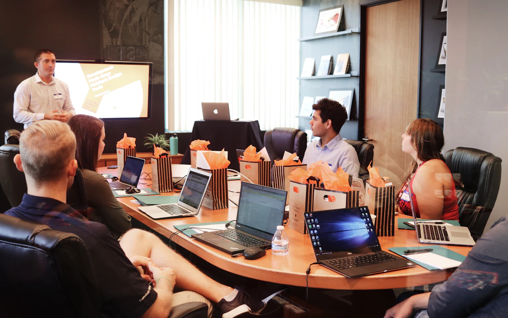

Servir bien es la estrategia que más vende
Ayudo a empresas y líderes a diseñar experiencias de servicio que aumentan la probabilidad de construir lealtad, no solo satisfacción.
¿Quién es Pily?
Mi nombre es María del Pilar, pero me gusta que me llamen Pily. Soy consultora de mercadeo de servicios y mercadeo relacional, con más de 26 años de experiencia en el mercado venezolano.
Trabajé 5 años en la industria petrolera y 10 en la farmacéutica antes de dedicarme a formar líderes. Mi tesis doctoral estudió el efecto predictor de contratar al personal correcto, el amor a las marcas y la lealtad a las marcas. Por encima de todo, creo en la capacidad de cambio del ser humano.
- PhD por la Universidad Simón Bolívar, MBA en España y dos especializaciones en psicología.
- Profesora en la Universidad Metropolitana (UNIMET), Extensión UNIMET y el CIAP de la UCAB.
- Profesora invitada en el IESA.
- Directora académica y profesora de mercadeo deportivo del diplomado de gestión deportiva FIFA.
- Becada en la Universidad de Harvard en dos oportunidades.
Entre la empresa y el aula
- 5 añosIndustria petrolera
Cinco años en el sector energético.
- 10 añosIndustria farmacéutica
Diez años en mercadeo farmacéutico.
- FormaciónPsicología y MBA
Dos especializaciones en psicología y un MBA en España.
- DoctoradoPhD · Universidad Simón Bolívar
Contratar bien, amor a las marcas y lealtad.
- BecasHarvard, dos veces
Becada en dos oportunidades.
- DocenciaUNIMET, UCAB e IESA
Más de 65.000 personas formadas.
- DeporteDiplomado FIFA
Directora académica y profesora de mercadeo deportivo.
- HoyMarketing Infinito
Una academia para formar líderes que impactan desde el servicio.
Donde el servicio se vuelve estrategia
Uno estrategia, ciencia y humanismo para crear marcas que trascienden.
Mercadeo de servicios
Cómo diferenciarse cuando no solo importa el producto: experiencias WOW e indicadores emocionales.
Mercadeo relacional
Relaciones estratégicas de largo plazo y el Efecto Pancho como filosofía práctica de lealtad.
Mercadeo deportivo
Gestión de marcas deportivas, experiencia del fan y psicología del aficionado, con visión FIFA.
Psiconeuroinmunología
La ciencia del impacto de las emociones aplicada al servicio, al liderazgo y al bienestar de los equipos.
Data, historias y reflexiones sobre el servicio como elemento diferenciador de las empresas… Y las personas
El Efecto Pancho
Satisfacción no es lealtad. El Efecto Pancho es mi modelo para hacer sentir a cada cliente importante, con pequeños gestos que construyen relaciones que duran.
Servicios para empresas y líderes
He trabajado con empresas nacionales e internacionales de las industrias farmacéutica, petrolera y deportiva.
Conferencias
Charlas que prenden la cotufera y la mantienen encendida: servicio, lealtad, liderazgo humanista y tendencias globales aterrizadas a Venezuela.
Solicitar conferencia →
Workshops in company
Cultura de servicio WOW, medición de emociones en clientes y empleados, y formación para equipos de alta rotación.
Diseñar un workshop →Consultoría y mentoría
Diagnóstico profundo y plan de implementación de 3 a 6 meses, o mentorías grupales para líderes que quieren instalar una cultura de servicio.
Agendar diagnóstico →Academia de Marketing Infinito
Estrategia, ciencia y servicio para un impacto que trasciende. Cursos, certificaciones y mentorías para formar líderes que impactan desde el servicio.
Ideas recientes

¿Garantizas papel toilette en tus eventos deportivos?
Estar en los detalles es la forma más pragmática de decir "me importas".

Venezuela como una marca deportiva
Tu equipo gana, empata o pierde, y te quedas con él. ¿Qué pasa cuando la marca es un país?

Ingenieros y artistas del servicio
La técnica resuelve el problema. El arte hace que la persona se sienta cuidada.
¡Conversemos!
Cuéntame qué necesita tu empresa o tu equipo: una conferencia, un workshop, una consultoría o simplemente una buena conversación sobre servicio.
- contactopilymodrono@gmail.com
- Caracas, Venezuela